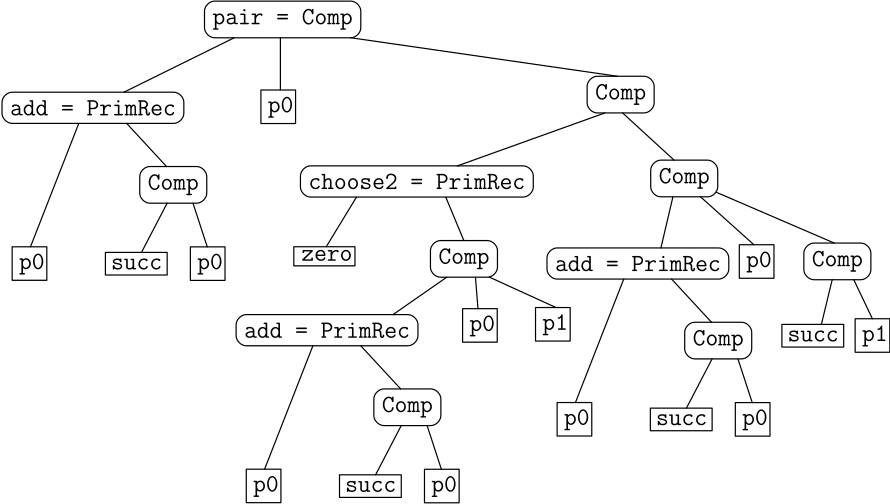

4.3 Primitive Rekursion kann nicht alles: die Péter-Ackermann-Funktion./course1/wly/04/03-ackermann.wly:2:11
4.3 Primitive Rekursion kann nicht alles: die Péter-Ackermann-Funktion./course1/wly/04/03-ackermann.wly:2:11
In den vorhergehenden Teilkapiteln haben wir gesehen, dass./course1/wly/04/03-ackermann.wly:4:5 Sie allerhand mit primitiv rekursiven Funktionen./course1/wly/04/03-ackermann.wly:5:5 implementieren können. Darunter Dinge, die komplexere./course1/wly/04/03-ackermann.wly:6:5 Rekursion oder Schleifen mit mehreren lokalen Variablen zu./course1/wly/04/03-ackermann.wly:7:5 brauchen scheinen (wie die Fibonacci-Zahlen), ja sogar./course1/wly/04/03-ackermann.wly:8:5 Dinge, die über den Bereich der natürlichen Zahlen./course1/wly/04/03-ackermann.wly:9:5 hinausgehen, wie zum Beispiel das Sortieren eines beliebig./course1/wly/04/03-ackermann.wly:10:5 langen Arrays. Kernpunkt war die Erkenntnis, dass wir./course1/wly/04/03-ackermann.wly:11:5 komplexere "Datenstrukturen" wie ./course1/wly/04/03-ackermann.wly:12:5Paare von natürlichen./course1/wly/04/03-ackermann.wly:12:39 Zahlen./course1/wly/04/03-ackermann.wly:13:5 als ./course1/wly/04/03-ackermann.wly:13:12eine./course1/wly/04/03-ackermann.wly:13:18 natürliche Zahl codieren können und./course1/wly/04/03-ackermann.wly:13:23 somit der primitiven Rekursion zugänglich machen können. Es./course1/wly/04/03-ackermann.wly:14:5 liegt also Nahe, zu vermuten, dass primitive Rekursion./course1/wly/04/03-ackermann.wly:15:5 bereits den Berechenbarkeitsbegriff zufriedenstellend./course1/wly/04/03-ackermann.wly:16:5 formalisiert: das also alles "Berechenbare" auch primitiv./course1/wly/04/03-ackermann.wly:17:5 rekursiv sei. Der ./course1/wly/04/03-ackermann.wly:18:5Wikipedia-Artikel über die./course1/wly/04/03-ackermann.wly:18:24 Ackermann-Funktion./course1/wly/04/03-ackermann.wly:19:5 ./course1/wly/04/03-ackermann.wly:19:73 schreibt, dass der deutsche Mathematiker David Hilbert dies./course1/wly/04/03-ackermann.wly:20:5 auch vermutete. Im Jahre 1926 jedoch definierte ./course1/wly/04/03-ackermann.wly:21:5Wilhelm./course1/wly/04/03-ackermann.wly:21:54 Ackermann./course1/wly/04/03-ackermann.wly:22:5 ./course1/wly/04/03-ackermann.wly:22:79 eine Funktion, die "offensichtlich berechenbar", jedoch./course1/wly/04/03-ackermann.wly:23:5 nicht primitiv rekursiv ist. Die Funktion, die wir heute./course1/wly/04/03-ackermann.wly:24:5 die Ackermann-Funktion nennen, ist allerdings eine./course1/wly/04/03-ackermann.wly:25:5 vereinfachte Version, die 1935 von der ungarischen./course1/wly/04/03-ackermann.wly:26:5 Mathematikerin ./course1/wly/04/03-ackermann.wly:27:5Rózsa./course1/wly/04/03-ackermann.wly:27:21 Péter./course1/wly/04/03-ackermann.wly:28:5 gefunden./course1/wly/04/03-ackermann.wly:28:54 wurde (obwohl der letztere Artikel das Jahr 1955 nennt)../course1/wly/04/03-ackermann.wly:29:5
Definition 4.3.1 (Péter-Ackermann-Funktion)../course1/wly/04/03-ackermann.wly:31:5
Manchmal sehen Sie in der Literatur auch die äquivalente,./course1/wly/04/03-ackermann.wly:42:9 vielleicht lesbarere Definition:./course1/wly/04/03-ackermann.wly:43:9
Für festes ./course1/wly/04/03-ackermann.wly:51:9$m\in \N$./course1/wly/04/03-ackermann.wly:51:20 schreiben wir auch ./course1/wly/04/03-ackermann.wly:51:29$A_m$./course1/wly/04/03-ackermann.wly:51:49 für die./course1/wly/04/03-ackermann.wly:51:54 ein-parametrige Funktion./course1/wly/04/03-ackermann.wly:52:9
Es lohnt sich, diese Funktion für kleine Werte von ./course1/wly/04/03-ackermann.wly:59:5$m$./course1/wly/04/03-ackermann.wly:59:56 zu./course1/wly/04/03-ackermann.wly:59:59 untersuchen. Aus der Definition geht unmittelbar hervor,./course1/wly/04/03-ackermann.wly:60:5 dass ./course1/wly/04/03-ackermann.wly:61:5$A_0(n) = n+1$./course1/wly/04/03-ackermann.wly:61:10 ist. Für ./course1/wly/04/03-ackermann.wly:61:24$A_1 (n)$./course1/wly/04/03-ackermann.wly:61:34 rechnen wir./course1/wly/04/03-ackermann.wly:61:43
Soweit schaut die Funktion nicht besonders beindruckend./course1/wly/04/03-ackermann.wly:73:5 aus. ./course1/wly/04/03-ackermann.wly:74:5$A_2$./course1/wly/04/03-ackermann.wly:74:10 bekommen iwr nach dem gleichen Schema:./course1/wly/04/03-ackermann.wly:74:15
wir fangen also mit ./course1/wly/04/03-ackermann.wly:80:5$1$./course1/wly/04/03-ackermann.wly:80:25 an und zählen ./course1/wly/04/03-ackermann.wly:80:28$n+1$./course1/wly/04/03-ackermann.wly:80:43 mal eine 2./course1/wly/04/03-ackermann.wly:80:48 drauf. Wir erhalten ./course1/wly/04/03-ackermann.wly:81:5$2n + 3$./course1/wly/04/03-ackermann.wly:81:25,./course1/wly/04/03-ackermann.wly:81:33 also./course1/wly/04/03-ackermann.wly:81:33
$A_3$./course1/wly/04/03-ackermann.wly:87:5 wird etwas unangenehmer, weil wir keine gute./course1/wly/04/03-ackermann.wly:87:10 Intuition haben, was ./course1/wly/04/03-ackermann.wly:88:5"./course1/wly/04/03-ackermann.wly:88:5$n+1$./course1/wly/04/03-ackermann.wly:88:27 mal verdoppeln und jedes Mal 3./course1/wly/04/03-ackermann.wly:88:32 draufzählen" ergibt. Mit 1 beginnend erhalten wir also./course1/wly/04/03-ackermann.wly:89:5
Das ist schon genug, um eine Vermutung zu formulieren:./course1/wly/04/03-ackermann.wly:99:5 ./course1/wly/04/03-ackermann.wly:100:5$A_3(n) = 2^{n+3} - 3$./course1/wly/04/03-ackermann.wly:100:5 und diese dann per Indution zu./course1/wly/04/03-ackermann.wly:100:27 beweisen../course1/wly/04/03-ackermann.wly:101:5
Theorem 4.3.2./course1/wly/04/03-ackermann.wly:106:5 ./course1/wly/04/03-ackermann.wly:106:5 Sei ./course1/wly/04/03-ackermann.wly:107:9$m \in \N$./course1/wly/04/03-ackermann.wly:107:13 gegeben. Die Funktion ./course1/wly/04/03-ackermann.wly:107:23$A_m$./course1/wly/04/03-ackermann.wly:107:46 ist primitiv./course1/wly/04/03-ackermann.wly:107:51 rekursiv../course1/wly/04/03-ackermann.wly:108:9
Beweis Wir verwenden Induktion über ./course1/wly/04/03-ackermann.wly:111:9$m$./course1/wly/04/03-ackermann.wly:111:38../course1/wly/04/03-ackermann.wly:111:41 Für ./course1/wly/04/03-ackermann.wly:111:41$m=0$./course1/wly/04/03-ackermann.wly:111:47 gilt./course1/wly/04/03-ackermann.wly:111:52 ./course1/wly/04/03-ackermann.wly:112:9$A_0(n)= n+1$./course1/wly/04/03-ackermann.wly:112:9 und somit ./course1/wly/04/03-ackermann.wly:112:22$A_0 = \succ$./course1/wly/04/03-ackermann.wly:112:33../course1/wly/04/03-ackermann.wly:112:46 Sei nun also./course1/wly/04/03-ackermann.wly:112:46 ./course1/wly/04/03-ackermann.wly:113:9$m \geq 1$./course1/wly/04/03-ackermann.wly:113:9../course1/wly/04/03-ackermann.wly:113:19 Wir sehen, dass./course1/wly/04/03-ackermann.wly:113:19
Ich schreibe nun ./course1/wly/04/03-ackermann.wly:119:9$t$./course1/wly/04/03-ackermann.wly:119:26 anstatt ./course1/wly/04/03-ackermann.wly:119:29$n$./course1/wly/04/03-ackermann.wly:119:38 als Parameter, um mich./course1/wly/04/03-ackermann.wly:119:41 der Notation der primitiven Rekursion anzunähern. Wir./course1/wly/04/03-ackermann.wly:120:9 wissen bereits, dass ./course1/wly/04/03-ackermann.wly:121:9$A_{m-1}$./course1/wly/04/03-ackermann.wly:121:30 primitiv rekursiv ist. Wir./course1/wly/04/03-ackermann.wly:121:39 können ./course1/wly/04/03-ackermann.wly:122:9$A_m(t)$./course1/wly/04/03-ackermann.wly:122:16 also schreiben als./course1/wly/04/03-ackermann.wly:122:24
Wir können also ./course1/wly/04/03-ackermann.wly:131:9$h = \comp (A_{m-1}, \pi^3_1)$./course1/wly/04/03-ackermann.wly:131:25 wählen. Was./course1/wly/04/03-ackermann.wly:131:55 ist ./course1/wly/04/03-ackermann.wly:132:9$g$./course1/wly/04/03-ackermann.wly:132:13?./course1/wly/04/03-ackermann.wly:132:16 Der Startwert soll ./course1/wly/04/03-ackermann.wly:132:16$g(\vec{x})$./course1/wly/04/03-ackermann.wly:132:37 sein, wir haben./course1/wly/04/03-ackermann.wly:132:49 aber kein ./course1/wly/04/03-ackermann.wly:133:9$\vec{x}$./course1/wly/04/03-ackermann.wly:133:19,./course1/wly/04/03-ackermann.wly:133:28 bzw. dies ist der "leere Vektor". Wir./course1/wly/04/03-ackermann.wly:133:28 brauchen eine Funktion ./course1/wly/04/03-ackermann.wly:134:9$C$./course1/wly/04/03-ackermann.wly:134:32,./course1/wly/04/03-ackermann.wly:134:35 die null Argumente nimmt und./course1/wly/04/03-ackermann.wly:134:35 ./course1/wly/04/03-ackermann.wly:135:9$A_{m-1}(1)$./course1/wly/04/03-ackermann.wly:135:9 zurückgibt. Also:./course1/wly/04/03-ackermann.wly:135:21 ./course1/wly/04/03-ackermann.wly:136:9$g = \comp(A_{m-1}, {\rm one})$./course1/wly/04/03-ackermann.wly:136:9 . Wir könnten sogar noch./course1/wly/04/03-ackermann.wly:136:40 frecher sein und./course1/wly/04/03-ackermann.wly:137:9 ./course1/wly/04/03-ackermann.wly:138:9$g = \comp(\succ, \comp(\succ, \comp(... \comp(\succ, \zero))))$./course1/wly/04/03-ackermann.wly:138:9 ./course1/wly/04/03-ackermann.wly:139:19 schreiben, einfach ./course1/wly/04/03-ackermann.wly:140:9$A_{m-1}(1)$./course1/wly/04/03-ackermann.wly:140:28 mal hintereinander; diesen./course1/wly/04/03-ackermann.wly:140:40 Wert also ./course1/wly/04/03-ackermann.wly:141:9hard-coden./course1/wly/04/03-ackermann.wly:141:20../course1/wly/04/03-ackermann.wly:141:31 Allerdings ist die erste Variante./course1/wly/04/03-ackermann.wly:141:31 einfacher, und somit./course1/wly/04/03-ackermann.wly:142:9
Wir sehen also: jedes ./course1/wly/04/03-ackermann.wly:148:9$A_m$./course1/wly/04/03-ackermann.wly:148:31,./course1/wly/04/03-ackermann.wly:148:36 betrachtet als Funktion mit./course1/wly/04/03-ackermann.wly:148:36 einem Eingabeparameter, ist primitiv rekursiv../course1/wly/04/03-ackermann.wly:149:9A\(\square\)
Wir haben also gezeigt, dass jedes ./course1/wly/04/03-ackermann.wly:151:5$A_m$./course1/wly/04/03-ackermann.wly:151:40 primitiv rekursiv./course1/wly/04/03-ackermann.wly:151:45 ist. Heißt das auch, dass die zwei-parametrige Funktion./course1/wly/04/03-ackermann.wly:152:5 ./course1/wly/04/03-ackermann.wly:153:5$A(m,n)$./course1/wly/04/03-ackermann.wly:153:5 ./course1/wly/04/03-ackermann.wly:153:13berechenbar./course1/wly/04/03-ackermann.wly:153:15 ist? In der primitiven Rekursion./course1/wly/04/03-ackermann.wly:153:27 haben wir keine Möglichkeit, den Index ./course1/wly/04/03-ackermann.wly:154:5$m$./course1/wly/04/03-ackermann.wly:154:44 als Eingabewert./course1/wly/04/03-ackermann.wly:154:47 zu lesen und dann aus dem unendlichen Array primitiv./course1/wly/04/03-ackermann.wly:155:5 rekursiver Funktionen ./course1/wly/04/03-ackermann.wly:156:5$[A_0, A_1, A_2, \dots]$./course1/wly/04/03-ackermann.wly:156:27 den Eintrag./course1/wly/04/03-ackermann.wly:156:51 ./course1/wly/04/03-ackermann.wly:157:5$A_m$./course1/wly/04/03-ackermann.wly:157:5 auszulesen. Aber ./course1/wly/04/03-ackermann.wly:157:10berechenbar./course1/wly/04/03-ackermann.wly:157:29 in einem ganz./course1/wly/04/03-ackermann.wly:157:41 allgemeinen Sinn? Diese Frage können wir zu diesem./course1/wly/04/03-ackermann.wly:158:5 Zeitpunkt nicht formal beantworten, weil wir den Begriff./course1/wly/04/03-ackermann.wly:159:5 allgemeiner Berechenbarkeit noch gar nicht definiert haben../course1/wly/04/03-ackermann.wly:160:5 Es ist allerdings an der Definition von ./course1/wly/04/03-ackermann.wly:161:5$A(m,n)$./course1/wly/04/03-ackermann.wly:161:45 nichts./course1/wly/04/03-ackermann.wly:161:53 magisches, und intuitiv würden wir sagen, dass es klar./course1/wly/04/03-ackermann.wly:162:5 berechenbar ist; so wie wir ja auch leicht eine Funktion./course1/wly/04/03-ackermann.wly:163:5 implementieren könnten, die ./course1/wly/04/03-ackermann.wly:164:5$A(m,n)$./course1/wly/04/03-ackermann.wly:164:33 berechnet../course1/wly/04/03-ackermann.wly:164:41
Theorem 4.3.3./course1/wly/04/03-ackermann.wly:169:5 ./course1/wly/04/03-ackermann.wly:169:5 Die Ackermann-Péter-Funktion ist nicht primitiv rekursiv../course1/wly/04/03-ackermann.wly:170:9
Mein Beweis paraphrasiert im Wesentlichen den auf./course1/wly/04/03-ackermann.wly:172:5 ./course1/wly/04/03-ackermann.wly:173:5planetmath.org./course1/wly/04/03-ackermann.wly:173:6../course1/wly/04/03-ackermann.wly:173:86
Die Aussage verstehen./course1/wly/04/03-ackermann.wly:175:6../course1/wly/04/03-ackermann.wly:175:28 Beachten Sie, dass Theorem 3.3.3./course1/wly/04/03-ackermann.wly:175:28 nicht mit Theorem 3.3.2 im Widerspruch steht. Theorem 3.3.3./course1/wly/04/03-ackermann.wly:176:5 besagt, dass ./course1/wly/04/03-ackermann.wly:177:5$A_m$./course1/wly/04/03-ackermann.wly:177:18 primitiv rekursiv ist, für jedes ./course1/wly/04/03-ackermann.wly:177:23$m$./course1/wly/04/03-ackermann.wly:177:57../course1/wly/04/03-ackermann.wly:177:60 ./course1/wly/04/03-ackermann.wly:177:60 Die Zahl ./course1/wly/04/03-ackermann.wly:178:5$m$./course1/wly/04/03-ackermann.wly:178:14 ist hier also ./course1/wly/04/03-ackermann.wly:178:17Teil der Aussage./course1/wly/04/03-ackermann.wly:178:33,./course1/wly/04/03-ackermann.wly:178:50 nicht./course1/wly/04/03-ackermann.wly:178:50 Eingabeparameter der Funktion; die Funktion ./course1/wly/04/03-ackermann.wly:179:5$A_m$./course1/wly/04/03-ackermann.wly:179:49 hat nur./course1/wly/04/03-ackermann.wly:179:54 ./course1/wly/04/03-ackermann.wly:180:5einen./course1/wly/04/03-ackermann.wly:180:6 Eingabeparameter. Theorem 3.3.3 hingegen macht eine./course1/wly/04/03-ackermann.wly:180:12 Aussage über ./course1/wly/04/03-ackermann.wly:181:5eine./course1/wly/04/03-ackermann.wly:181:19 Funktion ./course1/wly/04/03-ackermann.wly:181:24$A(m,n)$./course1/wly/04/03-ackermann.wly:181:34 mit ./course1/wly/04/03-ackermann.wly:181:42zwei./course1/wly/04/03-ackermann.wly:181:48 ./course1/wly/04/03-ackermann.wly:181:53 Eingabeparametern, und ./course1/wly/04/03-ackermann.wly:182:5$m$./course1/wly/04/03-ackermann.wly:182:28 ist nun einer dieser beiden../course1/wly/04/03-ackermann.wly:182:31 Anders ausgedrückt: sie können zwar jedes einzelne ./course1/wly/04/03-ackermann.wly:183:5$A_m$./course1/wly/04/03-ackermann.wly:183:56 ./course1/wly/04/03-ackermann.wly:183:61 in der "Programmiersprache" der primitiven Rekursion./course1/wly/04/03-ackermann.wly:184:5 implementieren, allerdings brauchen Sie für jedes ./course1/wly/04/03-ackermann.wly:185:5$m$./course1/wly/04/03-ackermann.wly:185:55 ./course1/wly/04/03-ackermann.wly:185:58 neuen Code. Sie können keinen Code schreiben, der, gegeben./course1/wly/04/03-ackermann.wly:186:5 ./course1/wly/04/03-ackermann.wly:187:5$m$./course1/wly/04/03-ackermann.wly:187:5,./course1/wly/04/03-ackermann.wly:187:8 den Code für ./course1/wly/04/03-ackermann.wly:187:8$A_m$./course1/wly/04/03-ackermann.wly:187:23 irgendwie implizit produziert und./course1/wly/04/03-ackermann.wly:187:28 dann mit ./course1/wly/04/03-ackermann.wly:188:5$n$./course1/wly/04/03-ackermann.wly:188:14 aufruft. Jedenfalls nicht in der./course1/wly/04/03-ackermann.wly:188:17 Programmiersprache der primitiven Rekursion../course1/wly/04/03-ackermann.wly:189:5
Beweisidee../course1/wly/04/03-ackermann.wly:191:6
Für jedes feste
./course1/wly/04/03-ackermann.wly:191:18$m$./course1/wly/04/03-ackermann.wly:191:35
ist die ein-parametrige./course1/wly/04/03-ackermann.wly:191:38
Funktion
./course1/wly/04/03-ackermann.wly:192:5$A_m := n \mapsto A(m,n)$./course1/wly/04/03-ackermann.wly:192:14
primitiv rekursiv und./course1/wly/04/03-ackermann.wly:192:39
kann als Funktion mit
./course1/wly/04/03-ackermann.wly:193:5$m$./course1/wly/04/03-ackermann.wly:193:27
verschachtelten
./course1/wly/04/03-ackermann.wly:193:30for./course1/wly/04/03-ackermann.wly:193:48-Schleifen./course1/wly/04/03-ackermann.wly:193:52
./course1/wly/04/03-ackermann.wly:193:52
betrachtet werden. Es wird sich herausstellen, dass
./course1/wly/04/03-ackermann.wly:194:5$A_m$./course1/wly/04/03-ackermann.wly:194:57
./course1/wly/04/03-ackermann.wly:194:62
in gewisser Weise die am schnellsten wachsende aller./course1/wly/04/03-ackermann.wly:195:5
solcher Funktionen ist. Wäre also
./course1/wly/04/03-ackermann.wly:196:5$A(m,n)$./course1/wly/04/03-ackermann.wly:196:39
./course1/wly/04/03-ackermann.wly:196:47
primitiv-rekursiv, dann könnten wir es mit
./course1/wly/04/03-ackermann.wly:197:5$d$./course1/wly/04/03-ackermann.wly:197:48
./course1/wly/04/03-ackermann.wly:197:51
verschachtelten
./course1/wly/04/03-ackermann.wly:198:5for./course1/wly/04/03-ackermann.wly:198:22-Schleifen./course1/wly/04/03-ackermann.wly:198:26
berechnen; was ein./course1/wly/04/03-ackermann.wly:198:26
Widerspruch ist, weil bereits
./course1/wly/04/03-ackermann.wly:199:5$A_{d+1}$./course1/wly/04/03-ackermann.wly:199:35
schneller wächst./course1/wly/04/03-ackermann.wly:199:44
als jede primitiv-rekursive Funktion mit
./course1/wly/04/03-ackermann.wly:200:5$d$./course1/wly/04/03-ackermann.wly:200:46
./course1/wly/04/03-ackermann.wly:200:49
verschachtelten Schleifen../course1/wly/04/03-ackermann.wly:201:5
Beweis Wir brauchen eine robuste Definition, was es heißt, dass./course1/wly/04/03-ackermann.wly:204:9 eine Funktion ./course1/wly/04/03-ackermann.wly:205:9$f: \N \rightarrow \N$./course1/wly/04/03-ackermann.wly:205:23 schneller wächst als./course1/wly/04/03-ackermann.wly:205:45 ./course1/wly/04/03-ackermann.wly:206:9$g: \N^k \rightarrow \N$./course1/wly/04/03-ackermann.wly:206:9../course1/wly/04/03-ackermann.wly:206:33
Definition 4.3.4./course1/wly/04/03-ackermann.wly:208:9 ./course1/wly/04/03-ackermann.wly:208:9 Sei ./course1/wly/04/03-ackermann.wly:209:13$f: \N \rightarrow \N$./course1/wly/04/03-ackermann.wly:209:17 und ./course1/wly/04/03-ackermann.wly:209:39$g: \N^k \rightarrow \N$./course1/wly/04/03-ackermann.wly:209:44../course1/wly/04/03-ackermann.wly:209:68 ./course1/wly/04/03-ackermann.wly:209:68 Die Funktion ./course1/wly/04/03-ackermann.wly:210:13$f$./course1/wly/04/03-ackermann.wly:210:26 ./course1/wly/04/03-ackermann.wly:210:29majorisiert./course1/wly/04/03-ackermann.wly:210:31 ./course1/wly/04/03-ackermann.wly:210:43$g$./course1/wly/04/03-ackermann.wly:210:44,./course1/wly/04/03-ackermann.wly:210:47 wenn./course1/wly/04/03-ackermann.wly:210:47
für alle ./course1/wly/04/03-ackermann.wly:216:13$x_1,\dots,x_k \in \N$./course1/wly/04/03-ackermann.wly:216:22 gilt. Wir schreiben auch./course1/wly/04/03-ackermann.wly:216:44 kurzerhand ./course1/wly/04/03-ackermann.wly:217:13$f \gt g$./course1/wly/04/03-ackermann.wly:217:24../course1/wly/04/03-ackermann.wly:217:33
Sei zum Beispiel ./course1/wly/04/03-ackermann.wly:219:9$g(x,y) = x \cdot y$./course1/wly/04/03-ackermann.wly:219:26 und ./course1/wly/04/03-ackermann.wly:219:46$f(x) = 2^x$./course1/wly/04/03-ackermann.wly:219:51../course1/wly/04/03-ackermann.wly:219:63 ./course1/wly/04/03-ackermann.wly:219:63 Dann majorisiert ./course1/wly/04/03-ackermann.wly:220:9$2^x$./course1/wly/04/03-ackermann.wly:220:26 die Funktion ./course1/wly/04/03-ackermann.wly:220:31$x \cdot y$./course1/wly/04/03-ackermann.wly:220:45 nicht; sei./course1/wly/04/03-ackermann.wly:220:56 beispielsweise ./course1/wly/04/03-ackermann.wly:221:9$(x,y) = (3,2)$./course1/wly/04/03-ackermann.wly:221:24,./course1/wly/04/03-ackermann.wly:221:39 dann ist ./course1/wly/04/03-ackermann.wly:221:39$g(x,y)=6$./course1/wly/04/03-ackermann.wly:221:50 aber./course1/wly/04/03-ackermann.wly:221:60 ./course1/wly/04/03-ackermann.wly:222:9$f(\max(3,2)) = 2^3 = 8$./course1/wly/04/03-ackermann.wly:222:9../course1/wly/04/03-ackermann.wly:222:33 Allerdings majorisiert ./course1/wly/04/03-ackermann.wly:222:33$2^x + 2$./course1/wly/04/03-ackermann.wly:222:58 ./course1/wly/04/03-ackermann.wly:222:67 die Funktion ./course1/wly/04/03-ackermann.wly:223:9$x+y$./course1/wly/04/03-ackermann.wly:223:22,./course1/wly/04/03-ackermann.wly:223:27 ganz allgemein weil ./course1/wly/04/03-ackermann.wly:223:27$2^x + 2 \gt x^2$./course1/wly/04/03-ackermann.wly:223:49 ./course1/wly/04/03-ackermann.wly:223:66 für alle ./course1/wly/04/03-ackermann.wly:224:9$x \in \N$./course1/wly/04/03-ackermann.wly:224:18 gilt. Wir werden nun zeigen, dass jede./course1/wly/04/03-ackermann.wly:224:28 primitiv rekursive Funktion ./course1/wly/04/03-ackermann.wly:225:9$g: \N^k \rightarrow \N$./course1/wly/04/03-ackermann.wly:225:37 von./course1/wly/04/03-ackermann.wly:225:61 einem ./course1/wly/04/03-ackermann.wly:226:9$A_r$./course1/wly/04/03-ackermann.wly:226:15 majorisiert wird; hierbei ist wichtig, dass./course1/wly/04/03-ackermann.wly:226:20 der Index ./course1/wly/04/03-ackermann.wly:227:9$r$./course1/wly/04/03-ackermann.wly:227:19 als Konstante betrachtet wird, also von der./course1/wly/04/03-ackermann.wly:227:22 "Bauweise" von ./course1/wly/04/03-ackermann.wly:228:9$g$./course1/wly/04/03-ackermann.wly:228:24 abhängen darf, nicht aber von den./course1/wly/04/03-ackermann.wly:228:27 Eingabewerten, die ./course1/wly/04/03-ackermann.wly:229:9$g$./course1/wly/04/03-ackermann.wly:229:28 bekommt../course1/wly/04/03-ackermann.wly:229:31
Lemma 4.3.5./course1/wly/04/03-ackermann.wly:231:9 ./course1/wly/04/03-ackermann.wly:231:9 Für jede primitiv rekursive Funktion./course1/wly/04/03-ackermann.wly:232:13 ./course1/wly/04/03-ackermann.wly:233:13$f: \N^k \rightarrow \N$./course1/wly/04/03-ackermann.wly:233:13 gibt es ein ./course1/wly/04/03-ackermann.wly:233:37$r \in \N$./course1/wly/04/03-ackermann.wly:233:50,./course1/wly/04/03-ackermann.wly:233:60 so dass./course1/wly/04/03-ackermann.wly:233:60 ./course1/wly/04/03-ackermann.wly:234:13$f$./course1/wly/04/03-ackermann.wly:234:13 von ./course1/wly/04/03-ackermann.wly:234:16$A_r$./course1/wly/04/03-ackermann.wly:234:21 majorisiert wird../course1/wly/04/03-ackermann.wly:234:26
Aus diesem Lemma folgt dann, dass ./course1/wly/04/03-ackermann.wly:236:9$A(m,n)$./course1/wly/04/03-ackermann.wly:236:43 selbst nicht./course1/wly/04/03-ackermann.wly:236:51 primitiv rekursiv sein kann. Wäre es dies, dann gäbe es ja./course1/wly/04/03-ackermann.wly:237:9 ein ./course1/wly/04/03-ackermann.wly:238:9$r$./course1/wly/04/03-ackermann.wly:238:13,./course1/wly/04/03-ackermann.wly:238:16 so dass das ein-parametrige ./course1/wly/04/03-ackermann.wly:238:16$A_r$./course1/wly/04/03-ackermann.wly:238:46 die./course1/wly/04/03-ackermann.wly:238:51 zwei-parametrige Funktion ./course1/wly/04/03-ackermann.wly:239:9$A(m,n)$./course1/wly/04/03-ackermann.wly:239:35 majorisieren würde:./course1/wly/04/03-ackermann.wly:239:43
für alle Werte ./course1/wly/04/03-ackermann.wly:245:9$m,n \in \N$./course1/wly/04/03-ackermann.wly:245:24 und somit insbesondere./course1/wly/04/03-ackermann.wly:245:36
was offensichtlich ein Widerspruch ist, da beide Seiten./course1/wly/04/03-ackermann.wly:251:9 gleich sind. Wir werden nun das Lemma beweisen. Wir./course1/wly/04/03-ackermann.wly:252:9 verwenden Induktion über die Weise, in der die Funktion ./course1/wly/04/03-ackermann.wly:253:9$f$./course1/wly/04/03-ackermann.wly:253:65 ./course1/wly/04/03-ackermann.wly:253:68 konstruiert worden ist, also über die Anzahl der Comp- und./course1/wly/04/03-ackermann.wly:254:9 PrimRec-Kombinatoren, die wir zum Bau von ./course1/wly/04/03-ackermann.wly:255:9$f$./course1/wly/04/03-ackermann.wly:255:51 gebraucht./course1/wly/04/03-ackermann.wly:255:54 haben. Im folgenden schreiben wir, wenn wir einen Vektor./course1/wly/04/03-ackermann.wly:256:9 ./course1/wly/04/03-ackermann.wly:257:9$\vec{x} = (x_1,\dots,x_n)$./course1/wly/04/03-ackermann.wly:257:9 aus natürlichen Zahlen haben,./course1/wly/04/03-ackermann.wly:257:36 oft ./course1/wly/04/03-ackermann.wly:258:9$x := \max(x_1,\dots,x_n)$./course1/wly/04/03-ackermann.wly:258:13../course1/wly/04/03-ackermann.wly:258:39 ./course1/wly/04/03-ackermann.wly:258:39Induktionsbasis../course1/wly/04/03-ackermann.wly:258:42 Wir./course1/wly/04/03-ackermann.wly:258:59 betrachten wir die Basisfunktionen ./course1/wly/04/03-ackermann.wly:259:9$\zero, \succ, \pi^n_k$./course1/wly/04/03-ackermann.wly:259:44../course1/wly/04/03-ackermann.wly:259:67 ./course1/wly/04/03-ackermann.wly:259:67 Wir wissen bereits, dass ./course1/wly/04/03-ackermann.wly:260:9$A_0(n) = n+1$./course1/wly/04/03-ackermann.wly:260:34 ist, also./course1/wly/04/03-ackermann.wly:260:48 ./course1/wly/04/03-ackermann.wly:261:9$A_0 = \succ$./course1/wly/04/03-ackermann.wly:261:9../course1/wly/04/03-ackermann.wly:261:22 Leider majorisiert ./course1/wly/04/03-ackermann.wly:261:22$A_0$./course1/wly/04/03-ackermann.wly:261:43 also ./course1/wly/04/03-ackermann.wly:261:48$\succ$./course1/wly/04/03-ackermann.wly:261:54 ./course1/wly/04/03-ackermann.wly:261:61 nicht. Wie steht es mit ./course1/wly/04/03-ackermann.wly:262:9$A_1$./course1/wly/04/03-ackermann.wly:262:33?./course1/wly/04/03-ackermann.wly:262:38 Es gilt ./course1/wly/04/03-ackermann.wly:262:38$A_1(n) = n+2$./course1/wly/04/03-ackermann.wly:262:48,./course1/wly/04/03-ackermann.wly:262:62 und./course1/wly/04/03-ackermann.wly:262:62 somit ist./course1/wly/04/03-ackermann.wly:263:9
wobei wir die Schreibweise./course1/wly/04/03-ackermann.wly:271:9 ./course1/wly/04/03-ackermann.wly:272:9$x = \max(\vec{x}) = \max(x_1,\dots,x_n)$./course1/wly/04/03-ackermann.wly:272:9 verwenden. Wir./course1/wly/04/03-ackermann.wly:272:50 schlussfolgern: ./course1/wly/04/03-ackermann.wly:273:9$A_2$./course1/wly/04/03-ackermann.wly:273:25 majorisiert jede Basisfunktion../course1/wly/04/03-ackermann.wly:273:30 ./course1/wly/04/03-ackermann.wly:274:9Induktionsschritt../course1/wly/04/03-ackermann.wly:274:10 Wenn ./course1/wly/04/03-ackermann.wly:274:29$f$./course1/wly/04/03-ackermann.wly:274:35 keine Basisfunktion ist,./course1/wly/04/03-ackermann.wly:274:38 dann wurde ./course1/wly/04/03-ackermann.wly:275:9$f$./course1/wly/04/03-ackermann.wly:275:20 mittels Komposition oder primitiver./course1/wly/04/03-ackermann.wly:275:23 Rekursion konstruiert. Für jeden Fall führen wir eine./course1/wly/04/03-ackermann.wly:276:9 getrennte Rechnung durch. ./course1/wly/04/03-ackermann.wly:277:9Komposition:./course1/wly/04/03-ackermann.wly:277:36 ./course1/wly/04/03-ackermann.wly:277:49 ./course1/wly/04/03-ackermann.wly:278:9$f(\vec{x}) = g(h_1(\vec{x}), \dots, h_k(\vec{x}))$./course1/wly/04/03-ackermann.wly:278:9,./course1/wly/04/03-ackermann.wly:278:60 für./course1/wly/04/03-ackermann.wly:278:60 primitiv rekursive Funktionen ./course1/wly/04/03-ackermann.wly:279:9$g, h_1, \dots, h_k$./course1/wly/04/03-ackermann.wly:279:39../course1/wly/04/03-ackermann.wly:279:59 Jede./course1/wly/04/03-ackermann.wly:279:59 dieser Funktionen wurde mit ./course1/wly/04/03-ackermann.wly:280:9weniger./course1/wly/04/03-ackermann.wly:280:38 Kombinatoren./course1/wly/04/03-ackermann.wly:280:46 konstruiert; somit wird jede dieser Funktionen von einem./course1/wly/04/03-ackermann.wly:281:9 ./course1/wly/04/03-ackermann.wly:282:9$A_r$./course1/wly/04/03-ackermann.wly:282:9 majorisiert:./course1/wly/04/03-ackermann.wly:282:14 ./course1/wly/04/03-ackermann.wly:283:9$A_r \gt g, A_{s_1} \gt h_1, \dots, A_{s_k} \gt h_k$./course1/wly/04/03-ackermann.wly:283:9../course1/wly/04/03-ackermann.wly:283:61 Für./course1/wly/04/03-ackermann.wly:283:61 einen Eingabevektor ./course1/wly/04/03-ackermann.wly:284:9$\vec{x}$./course1/wly/04/03-ackermann.wly:284:29 schreiben wir./course1/wly/04/03-ackermann.wly:284:38 ./course1/wly/04/03-ackermann.wly:285:9$x := \max(x_1,\dots,x_n)$./course1/wly/04/03-ackermann.wly:285:9 und rechnen:./course1/wly/04/03-ackermann.wly:285:35
Wir setzen nun ./course1/wly/04/03-ackermann.wly:294:9$q := \max(r, s_1, \dots, s_k)$./course1/wly/04/03-ackermann.wly:294:24../course1/wly/04/03-ackermann.wly:294:55 Dann ist./course1/wly/04/03-ackermann.wly:294:55 der obige Wert höchstens:./course1/wly/04/03-ackermann.wly:295:9
Schlussendlich behaupte ich, dass./course1/wly/04/03-ackermann.wly:302:9 ./course1/wly/04/03-ackermann.wly:303:9$A_{q+1}(x+1) \leq A_{q+2}(x)$./course1/wly/04/03-ackermann.wly:303:9 gilt:./course1/wly/04/03-ackermann.wly:303:39
Also: ./course1/wly/04/03-ackermann.wly:309:9$A_{q+2}$./course1/wly/04/03-ackermann.wly:309:15 majorisiert ./course1/wly/04/03-ackermann.wly:309:24$f$./course1/wly/04/03-ackermann.wly:309:37../course1/wly/04/03-ackermann.wly:309:40 ./course1/wly/04/03-ackermann.wly:309:40Primitive Rekursion:./course1/wly/04/03-ackermann.wly:309:43 ./course1/wly/04/03-ackermann.wly:309:64 ./course1/wly/04/03-ackermann.wly:310:9$f = \primrec (g,h)$./course1/wly/04/03-ackermann.wly:310:9,./course1/wly/04/03-ackermann.wly:310:29 also./course1/wly/04/03-ackermann.wly:310:29
wobei ./course1/wly/04/03-ackermann.wly:320:9$g, h$./course1/wly/04/03-ackermann.wly:320:15 bereits mit weniger Kombinatoren konstruierte./course1/wly/04/03-ackermann.wly:320:21 primitiv rekursive Funktionen sind. Daher gibt es ein./course1/wly/04/03-ackermann.wly:321:9 ./course1/wly/04/03-ackermann.wly:322:9$q \in \N$./course1/wly/04/03-ackermann.wly:322:9 mit ./course1/wly/04/03-ackermann.wly:322:19$A_q \gt g$./course1/wly/04/03-ackermann.wly:322:24 und ./course1/wly/04/03-ackermann.wly:322:35$A_q \gt h$./course1/wly/04/03-ackermann.wly:322:40../course1/wly/04/03-ackermann.wly:322:51
Behauptung 4.3.6./course1/wly/04/03-ackermann.wly:324:9 ./course1/wly/04/03-ackermann.wly:324:9 ./course1/wly/04/03-ackermann.wly:325:13$f(t, \vec{x}) \leq A_{q+1} (t+x)$./course1/wly/04/03-ackermann.wly:325:13,./course1/wly/04/03-ackermann.wly:325:47 wobei./course1/wly/04/03-ackermann.wly:325:47 ./course1/wly/04/03-ackermann.wly:326:13$x = \max(\vec{x}) = \max(x_1,\dots,x_n)$./course1/wly/04/03-ackermann.wly:326:13../course1/wly/04/03-ackermann.wly:326:54
Beweis Wir verwenden Induktion über ./course1/wly/04/03-ackermann.wly:329:13$t$./course1/wly/04/03-ackermann.wly:329:42../course1/wly/04/03-ackermann.wly:329:45 Wenn ./course1/wly/04/03-ackermann.wly:329:45$t=0$./course1/wly/04/03-ackermann.wly:329:52 ist, dann./course1/wly/04/03-ackermann.wly:329:57 gilt./course1/wly/04/03-ackermann.wly:330:13
Wenn ./course1/wly/04/03-ackermann.wly:336:13$t \geq 1$./course1/wly/04/03-ackermann.wly:336:18 ist, dann gilt./course1/wly/04/03-ackermann.wly:336:28
Somit ist die Behauptung bewiesen../course1/wly/04/03-ackermann.wly:351:13A\(\square\)
Die Behauptung reicht aber noch nicht, da die rechte Seite./course1/wly/04/03-ackermann.wly:353:9 der Ungleichung ./course1/wly/04/03-ackermann.wly:354:9$f(t,\vec{x}) \lt A_{q+1}(t+x)$./course1/wly/04/03-ackermann.wly:354:25 eine./course1/wly/04/03-ackermann.wly:354:56 Funktion in zwei Parametern ist: ./course1/wly/04/03-ackermann.wly:355:9$t$./course1/wly/04/03-ackermann.wly:355:42 und ./course1/wly/04/03-ackermann.wly:355:45$x$./course1/wly/04/03-ackermann.wly:355:50,./course1/wly/04/03-ackermann.wly:355:53 wir aber für./course1/wly/04/03-ackermann.wly:355:53 das zu beweisende Lemma aber eine Funktion in einem./course1/wly/04/03-ackermann.wly:356:9 Parameter brauchen, nämlich ./course1/wly/04/03-ackermann.wly:357:9$\max(t, \vec{x})$./course1/wly/04/03-ackermann.wly:357:37../course1/wly/04/03-ackermann.wly:357:55 Sei also./course1/wly/04/03-ackermann.wly:357:55 ./course1/wly/04/03-ackermann.wly:358:9$z := \max(t,x) = \max(t, x_1,\dots,x_n)$./course1/wly/04/03-ackermann.wly:358:9../course1/wly/04/03-ackermann.wly:358:50 Dann gilt./course1/wly/04/03-ackermann.wly:358:50
Es gilt also ./course1/wly/04/03-ackermann.wly:367:9$A_{q+2} \gt f$./course1/wly/04/03-ackermann.wly:367:22 und das Lemma ist bewiesen../course1/wly/04/03-ackermann.wly:367:37A\(\square\)
In der Vorlesung am 7. Mai 2024 hatte ich den ./course1/wly/04/03-ackermann.wly:369:5Grad./course1/wly/04/03-ackermann.wly:369:52 einer./course1/wly/04/03-ackermann.wly:369:57 primitiv-rekursiven Funktion definiert. Das ist in etwa die./course1/wly/04/03-ackermann.wly:370:5 "Verschachtelungstiefe" von ./course1/wly/04/03-ackermann.wly:371:5$f$./course1/wly/04/03-ackermann.wly:371:33../course1/wly/04/03-ackermann.wly:371:36 Betrachten wir./course1/wly/04/03-ackermann.wly:371:36 beispielsweise die Funktion./course1/wly/04/03-ackermann.wly:372:5 ./course1/wly/04/03-ackermann.wly:373:5$\pair(x,y) = {x + y + 1 \choose 2} + x$./course1/wly/04/03-ackermann.wly:373:5 und dröseln auf,./course1/wly/04/03-ackermann.wly:373:45 wie wir diese als primitiv-rekursive Funktion konstruiert./course1/wly/04/03-ackermann.wly:374:5 haben:./course1/wly/04/03-ackermann.wly:375:5
pair = Comp(add, p0, Comp(choose2,Comp(add,p0,Comp(succ,p1))))./course1/wly/04/03-ackermann.wly:378:5 choose2 = PrimRec(zero, Comp(add,p0,p1))./course1/wly/04/03-ackermann.wly:379:5 add = PrimRec (p0, Comp(succ, p0))./course1/wly/04/03-ackermann.wly:380:5
dann können wir das auf Baum darstellen:./course1/wly/04/03-ackermann.wly:383:5

course1/public/img/primitive-rekursion/primitive-recursive-tree.svg